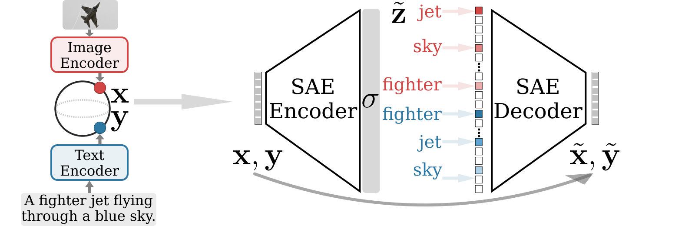
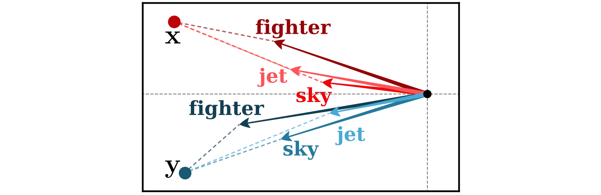
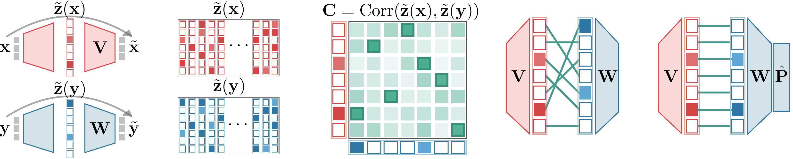

2026-09-16 연구 미팅
(진행 상황 공유)
(진행 상황 공유)
RECAP
Sparse Autoencoder · 소수의 활성 특징을 통한 입력 표현과 복원

RECAP
동일 개념에 대한 모달리티 간 특징 방향의 일치 가정

학습된 임베딩 모델이 완벽하지 않기 때문에 임베딩 표현에서
같은 개념에 대한 특징이라도 모달리티에 따라서
서로 다른 특징 방향을 가질 수 있음
RECAP
학습 단계이미지 SAE와 텍스트 SAE의 독립 학습
학습 이후활성값의 상관점수를 이용한 학습 후 대응

Coactivation correlation · 짝지어진 이미지·텍스트에서 두 특징의 활성값 간 상관계수
FOLLOW-UP
RELATED WORK
이번 검토 대상 · coactivation correlation 기반의 학습 후 1대1 대응
TWO QUESTIONS
OBSERVED EXAMPLE
| 눈 있음 | 눈 없음 | |
|---|---|---|
| 스키 있음 | 2,814 | 165 |
| 스키 없음 | 2,240 | 113,068 |
눈·스키 주석 상관 0.717
| 텍스트 눈 | 텍스트 스키 | |
|---|---|---|
| 이미지 눈 | 0.641 | 0.763 |
| 이미지 스키 | 0.352 | 0.607 |
같은 범주 다른 범주
DATASET
사람 · 자전거 · 자동차 · 기차 · 개
고양이 · 곰 · 스키 · 서핑보드 · 의자
잔디 · 눈 · 바다 · 모래 · 흙
자갈 · 진흙 · 나무 · 구름 · 나무 바닥
RQ1
함께 자주 등장하는 다른 범주일수록
특징 상관점수가 높은가?
같은 범주보다 점수가 높은 다른 범주는
얼마나 자주 존재하는가?
양의 동시 등장 상관을 0으로 조정하면
특징 상관점수가 낮아지는가?
RQ1 · 질문 1
RQ1 · 질문 2
170개 상대 중 하나라도 같은 범주의 점수를 넘은 범주의 비율
RQ1 · 질문 3
ONE FEATURE PER CONCEPT
원본과 해당 범주를 가린 입력의 활성값을 가장 잘 구분하는 특징 선택
| 범주 | 1위 특징 번호 | AUROC |
|---|---|---|
| 서핑보드 | 280 | 0.526 |
| 모래 | 280 | 0.602 |
| 바다 | 280 | 0.706 |
1위 특징의 공유 범주 88 / 171개
| 범주 | 1위 특징 번호 | AUROC |
|---|---|---|
| 흙 | 1743 | 0.986 |
| 자갈 | 1743 | 0.938 |
| 진흙 | 1743 | 0.956 |
| 모래 | 1743 | 0.900 |
1위 특징의 공유 범주 56 / 171개
FIVE FEATURES PER CONCEPT
| 범주 | 1위 | 2위 | 3위 | 4위 | 5위 |
|---|---|---|---|---|---|
| 서핑보드 | 2800.526 | 6660.518 | 38220.514 | 5790.514 | 15250.513 |
| 모래 | 2800.602 | 33560.530 | 36970.521 | 33380.520 | 14230.516 |
| 바다 | 2800.706 | 31620.613 | 15250.583 | 19380.573 | 6660.556 |
| 범주 | 1위 | 2위 | 3위 | 4위 | 5위 |
|---|---|---|---|---|---|
| 흙 | 17430.986 | 33710.582 | 20040.526 | 33410.517 | 33300.508 |
| 자갈 | 17430.938 | 29150.665 | 23930.606 | 34570.602 | 33300.524 |
| 진흙 | 17430.956 | 26120.663 | 35100.582 | 23950.544 | 16680.527 |
| 모래 | 17430.900 | 26040.688 | 3800.517 | 6570.508 | 3230.506 |
여러 특징을 활용한 개념 표현과 모달리티 간 대응의 검토